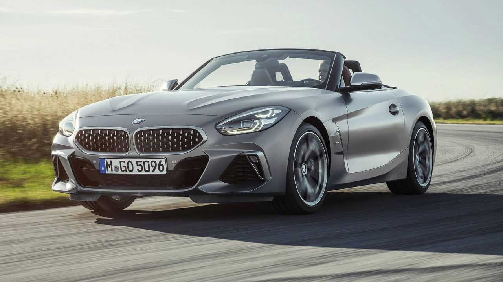
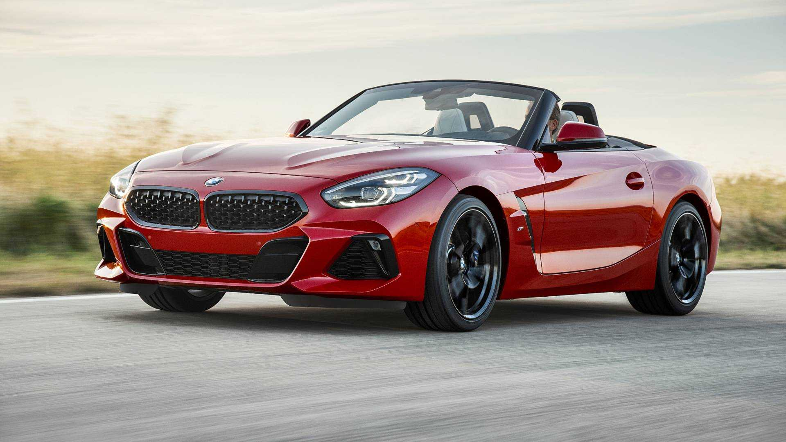

BMW
BMW Z4 Roadster
جميع نسخ BMW Z4 Roadster مع المواصفات الرسمية مرتبة في صفحة واحدة.
جميع نسخ BMW Z4 Roadster مع المواصفات الرسمية مرتبة في صفحة واحدة.

| المحرك | 2.0 لتر تيربو |
| عدد الأسطوانات | 4 |
| القوة | 197 حصان |
| عزم الدوران | 320 نيوتن متر |
| ناقل الحركة | 8 سرعات Steptronic Sport |
| نظام الدفع | خلفي |
| التسارع (0-100) | 6.6 ثانية |
| السرعة القصوى | 240 كم/س |
| عدد المقاعد | 2 |
| نوع الوقود | بنزين |

| المحرك | 2.0 لتر تيربو |
| عدد الأسطوانات | 4 |
| القوة | 258 حصان |
| عزم الدوران | 400 نيوتن متر |
| ناقل الحركة | 8 سرعات Steptronic Sport |
| نظام الدفع | خلفي |
| التسارع (0-100) | 5.4 ثانية |
| السرعة القصوى | 250 كم/س |
| عدد المقاعد | 2 |
| نوع الوقود | بنزين |
| المحرك | 3.0 لتر 6 أسطوانات مستقيمة تيربو |
| عدد الأسطوانات | 6 |
| القوة | 387 حصان |
| عزم الدوران | 500 نيوتن متر |
| ناقل الحركة | 8 سرعات Steptronic Sport |
| نظام الدفع | خلفي |
| التسارع (0-100) | 4.1 ثانية |
| السرعة القصوى | 250 كم/س |
| عدد المقاعد | 2 |
| نوع الوقود | بنزين |